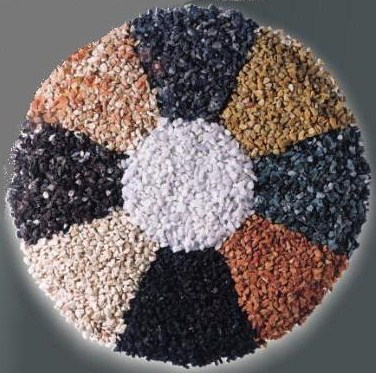
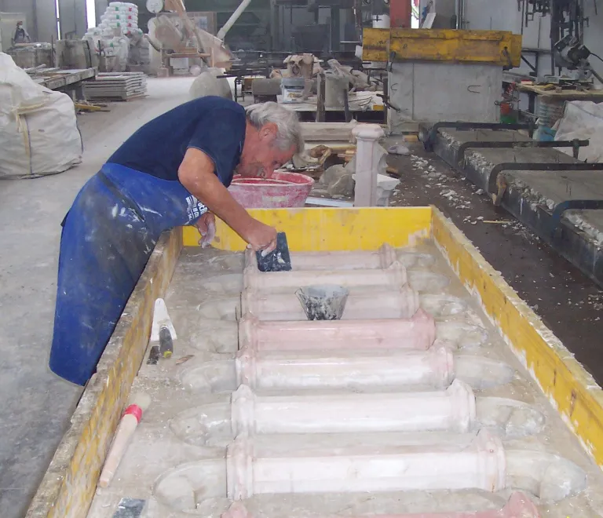
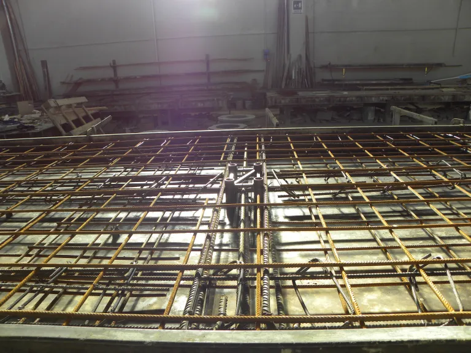
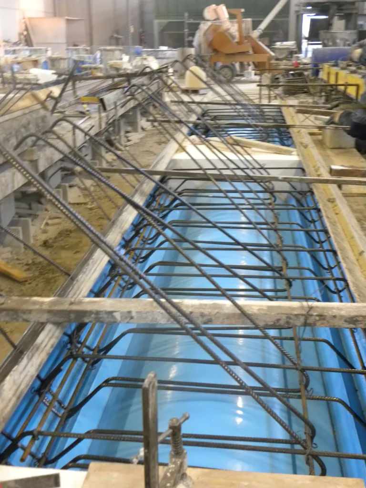
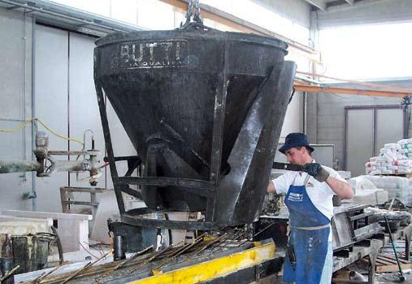
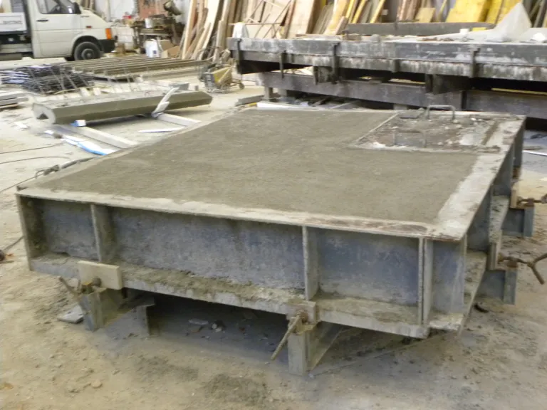
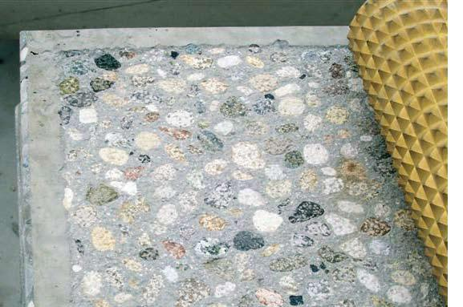
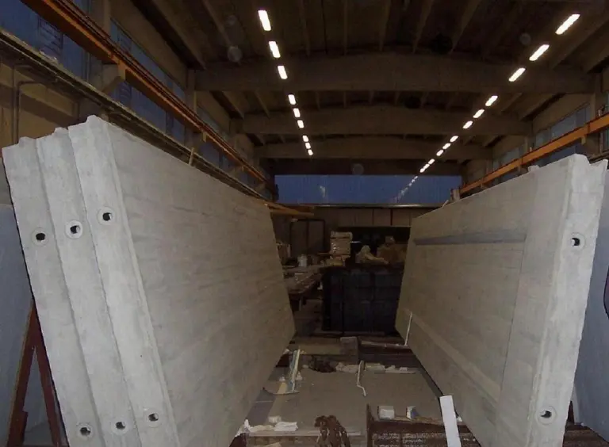
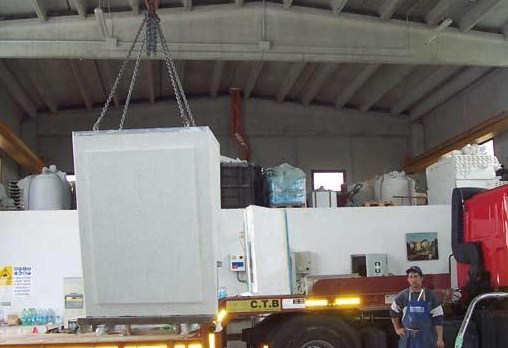

I Materiali e la Ricerca
Le miscele di cemento armato grigio, bianco e colorato con graniglia di marmo di vari colori e granulometrie sono il risultato di sperimentazioni e ricerche continue per ottenere il miglior rapporto estetico e strutturale.

I colori della graniglia
Il Ciclo Produttivo
Preparato il cassero e posizionato il ferro d'armatura si procede al suo riempimento con una miscela di calcestruzzo confezionata grazie ad un impianto di betonaggio completamente automatizzato. Avenuta la maturazione adeguata il manufatto viene scasserato con l'ausilio di una gru a ponte della portata di 6,3 T, poi stoccato o trasferito al reparto finitura.

Fase di lavorazione di uno stampo

Cassero armato

Cassero con armatura

Fase di riempimento del cassero

Cassero in maturazione
Il Reparto Finitura e Trattamenti
Nel reparto finitura si eseguono una serie di lavorazioni come: levigatura, lucidatura, bocciardatura, spazzolatura, lavatura, sabbiatura. Tali lavorazioni conferiscono al manufatto un particolare e pregiato aspetto estetico. Possono essere aggiunti altri possibili trattamenti quali: antispolvero, cera, idrorepellente.
A lavorazione ultimata i vari pezzi vengono siglati per permetterne una rapida messa in opera. I manufatti vengono poi imballati per preservarli da eventuali danni durante il trasloco o il trasporto.

Finitura e trattamento

Stoccaggio

Carico manufatto per trasporto
Video del Ciclo Produttivo
Guarda i video dimostrativi delle nostre lavorazioni sul nostro canale ufficiale YouTube.
🎬 Guarda le lavorazioni e le finiture in azione
▶ Apri il video su YouTube